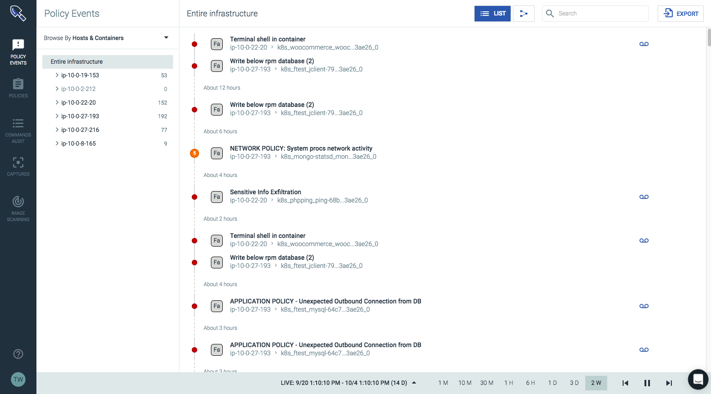
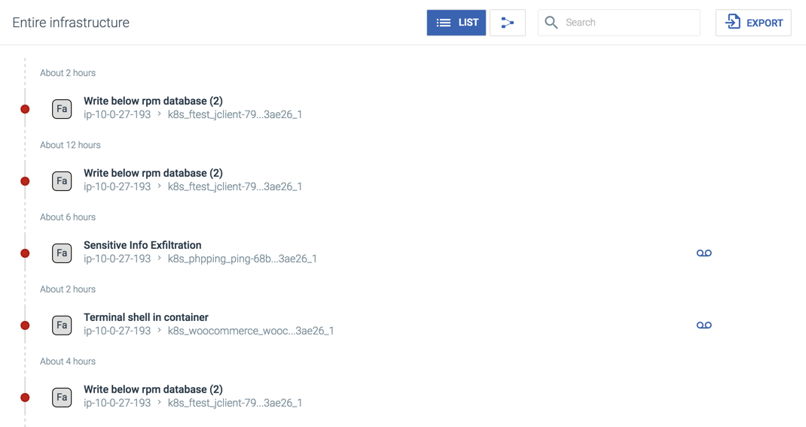
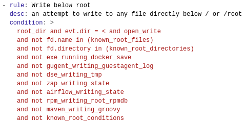
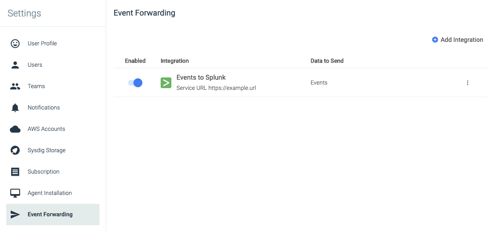

Policy Events
The Policy Events module displays a complete list of all events that have occurred within the infrastructure during a defined timeline. The module provides users with an overview of the entire infrastructure, as well as the functionality to deep dive into specific components, identify false positives, and configure policies to optimize performance.
Navigate the Policy Events Module
List View
The list view provides a comprehensive list of all events within the grouping/timeline, in chronological order:
|  |
Note
If multiple events occur at the same time, the dot will contain the number of events:
 |
This view presents events in reverse chronological order, with the most recent event listed at the top. The following information is displayed:
Name | Description |
|---|---|
Severity | The severity of the event based on the policies triggered.
NoteIf using the Sysdig API to work with policy events, note the numeric value of the severity levels: Low = 1 Medium = 2 High = 3 |
Rule Type | The type of rule violated by the event. Each rule type is represented by a periodic table style identifier:
|
Policy List | The policy or policies triggered by the event/s. Each policy is listed in bold text. |
Entity | The entity the event originated from. The entities will reflect the current NoteIf multiple entities are impacted, a notation will appear stating |
Action(s) taken | The action(s) taken in response to the event. Each action is represented by an icon:
|
Event Details
Selecting an event opens the Policy Event Details panel, which displays a detailed summary of the event, the location it occurred, and the policies that were violated:
 |
The following information is displayed:
Name | Description |
|---|---|
When | The date and time the event(s) occurred. |
Related Resources | Additional information about the event, including:
|
Severity | The severity of the event(s) based on the policies triggered.
NoteIf using the Sysdig API to work with policy events, note the numeric value of the severity levels: Low = 1 Medium = 2 High = 3 |
Triggered Policy | The policies that triggered the event(s). The link opens the NoteAdd/remove filter links next to each policy will add/remove that policy to the search bar. |
Triggered Rule Type | The type of rule violated by the event. Each rule type is represented by a periodic table style identifier:
|
Scope | The scope of the event within the infrastructure. NoteThe entities listed, and the order they appear, will vary based on the grouping selected in the |
Host | The hostname and MAC address of the host where the event occurred. |
Container | The ID, name, and image of the container where the event occurred. |
Actions | The action(s) taken in response to the event(s). Each action is represented by an icon:
|
Summary | Detailed information regarding the event. |
Topology View
The topology view provides an overview of all events, broken down visually to show their network dependencies across the various hosts, containers, and services, based on the configured grouping/timeline:
Note
For more information on configuring groupings and time intervals, refer to the Filter Policy Events section.
Each node can be drilled-down into, to find the exact events requiring review, by zooming in, and selecting the Expand (plus) icon in the top left corner of the node:
 |
Filter Policy Events
Groupings
Groupings are hierarchical organizations of labels, allowing users to organize their infrastructure views in a logical hierarchy. Users can switch between pre-configured groupings via the Browse By menu, or configure custom groupings, and then dive deeper into the infrastructure. For more information about groupings, refer to the Configure Groupings in Sysdig Secure documentation
Search Filters
Search filters can be applied by using the search bar. The event numbers alongside the groupings in the Browse By menu will be updated to reflect the number of events that meet the search criteria. The search bar example below displays only Write below rpm database events:
 |
Note
The topology view is not impacted by the search function.
Configure Groupings in Sysdig Secure
Groupings are hierarchical organizations of labels, allowing users to organize their infrastructure views in a logical hierarchy. Users can switch between pre-configured groupings via the Browse By menu, or configure custom groupings, and then dive deeper into the infrastructure.
Note
For more general information about groupings, refer to the Grouping, Scoping, and Segmenting Metrics documentation
Switch Groupings
To switch to a new grouping:
From the
Commands Auditmodule, open theBrowse Bymenu, and select the grouping from the list:
Create a New Grouping
To create a new grouping:
From the
Commands Auditmodule, open theBrowse Bymenu, and clickConfigure Groupingsto open theGroupings Editor.Click the
Create New Groupinglink.Open the first level grouping drop-down menu

Select the desired top-level label, or search for it by scrolling or using the search bar, then select it.
Optional: To add additional grouping levels, open the new blank drop-down menu, and repeat step 3.
Note
Step five can be repeated until there are no further layers available in the infrastructure label hierarchy.
Click the
Savebutton to save the grouping.
Note
Sysdig Secure has several suggested groupings that are pre-configured, but not included in the default list. These can be added by clicking the Add (plus) button beside the grouping name:
 |
Rename an Existing Grouping
To rename a grouping:
From the
Commands Auditmodule, open theBrowse Bymenu, and clickConfigure Groupingsto open theGroupings Editor.Select the grouping from the list.
Edit the name of the grouping in the
Editpanel, and click the Save button.
Duplicate an Existing Grouping
To create a duplicate of a grouping:
From the
Commands Auditmodule, open theBrowse Bymenu, and clickConfigure Groupingsto open theGroupings Editor.Click the
Duplicate(pages) icon beside the relevant grouping to duplicate it:
Configure the new grouping, and click the
Savebutton.
Delete a Grouping
To delete a grouping:
From the
Commands Auditmodule, open theBrowse Bymenu, and clickConfigure Groupingsto open theGroupings Editor.Click the
Delete(trash can) icon to remove the grouping.
Click the
Savebutton to confirm the change.
Identify False Positives
False-positive policy events (events that trigger based on normal activity) can occur after the initial installation of Sysdig Secure. While not harmful, it is considered the best practice to mitigate these events if possible. Identifying false positives generally involves the following steps:
Identify the most commonly occurring policy events.
Determine if the events are unique to the environment.
Address the false positives via Falco rule changes.
Address the false positives via policy scope.
Disable the policy/policies that trigger the events.
Examples for each of the steps are outlined below.
Identify Common Policy Events
The events that occur the most often should be addressed first. This can be done from the Policy Events module, by reviewing the list for the most common occurrences:
|  |
For a more detailed view, Sysdig provides the python-sdc-client and the Sysdig Secure APIs to access the direct policy event stream. The example program get_secure_policy_events.py, with the --summarize argument, provides a summarized view of the policy events ordered by frequency. --summarize also removes any container information from the output strings, to allow for better aggregation of similar events.
Note
Sysdig also recommends using the python-sdc-client, and in particular get_secure_policy_events.py, to collect policy events for on-premises customers, as Sysdig does not have direct access to the UI for troubleshooting, and the program can be written to a file, and passed on as feedback. For more information about the python-sdc-client, refer to the Sysdig Cloud Python Script Library documentation.
Example output is shown below:
user@host:~$ python examples/get_secure_policy_events.py --help usage: examples/get_secure_policy_events.py [-s|--summarize] [-l|--limit <limit>] <sysdig-token> [<duration sec>|<from sec> <to sec>] -s|--summarize: group policy events by sanitized output and print by frequency -l|--limit: with -s, only print the first <limit> outputs You can find your token at https://secure.sysdig.com/#/settings/user user@host:~$ python examples/get_secure_policy_events.py --summarize 5b83272d-6e3f-44b3-b3b8-9dd8671f98b7 604800 56 Database-related program spawned process other than itself (user=root program=sh -c ls > /dev/null parent=mysqld) 24 Sensitive file opened for reading by non-trusted program (user=root name=ftest command=ftest -i 25200 -a exfiltration file=/etc/shadow parent=docker-containe gparent=docker-containe ggparent=dockerd gggparent=systemd) 14 Rpm database opened for writing by a non-rpm program (command=ftest -i 43200 -a write_rpm_database file=/var/lib/rpm/created-by-event-generator-sh) 1 A shell was spawned in a container with an attached terminal (user=root shell=sh parent=exe cmdline=sh terminal=34870) 1 A shell was spawned in a container with an attached terminal (user=root shell=sh parent=exe cmdline=sh terminal=34871) 1 A shell was spawned in a container with an attached terminal (user=root shell=sh parent=exe cmdline=sh terminal=34872) 1 A shell was spawned in a container with an attached terminal (user=root shell=sh parent=exe cmdline=sh terminal=34869) 1 A shell was spawned in a container with an attached terminal (user=root shell=bash parent=exe cmdline=bash terminal=34816) 1 A shell was spawned in a container with an attached terminal (user=root shell=sh parent=exe cmdline=sh terminal=34867) 1 A shell was spawned in a container with an attached terminal (user=root shell=sh parent=exe cmdline=sh terminal=34868) 1 A shell was spawned in a container with an attached terminal (user=root shell=sh parent=exe cmdline=sh terminal=34866)
Determine Policy Uniqueness
In many cases, policy events are related to the use of common software used in many environments, resulting in multiple customers seeing the same events. If the policy event is likely to occur for other customers, contact Sysdig Support so that the default Falco rules can be updated.
Configure Falco Rules for False Positives
For policy events local to the environment, the first step to address them is by adding custom Falco rules via the Rules Editor tab of the Policies module. These additions will extend or overwrite the behavior of a list, macro, or rule from the default rules section, in order to address the false positive.
A number of rules have a macro with the prefix user_, that can be overridden in the custom rules section in order to change the behavior of a rule. Some examples include:
user_known_write_etc_conditionsuser_read_sensitive_file_conditionsuser_known_change_thread_namespace_binariesuser_shell_container_exclusionsuser_trusted_containersuser_sensitive_mount_containers
If a user_ macro is not available, Sysdig recommends appending changes to an existing list, macro, or rule, instead of overwriting them.
Warning
Overwritten lists, macros, and rules will remain static when the default rules are updated. This could lead to new default rules being shadowed and inaccessible to the user.
The specific changes necessary to the Falco rules depend heavily on the policy that triggered the false positives. A few examples are shown below:
Write below etcFor the
Write Below etcpolicy, there may be an additional program that writes specific file(s) below/etc(this example uses the programcatsd, and the file/etc/catfood.cfg). A macro could then be defined as follows:- macro: catsd_writing_catfood_cfg condition: (proc.name=catsd and fd.name=/etc/catfood.cfg)
In addition, the macro
user_known_write_etc_conditionswould need to be overwritten to add a new exception:- macro: user_known_write_etc_conditions condition: catsd_writing_catfood_cfg
Launch Privileged ContainerFor theLaunch Privileged Containerpolicy, there may be a specific container that must run with privileges. The example macro below uses images starting withregistry.customer.com/mydatastore, and overrides theuser_trusted_containersmacro:- macro: user_trusted_containers condition: (container.image startswith registry.customer.com/mydatastore)
Run shelluntrustedFor the
Run shelluntrustedpolicy, a program may be present that spawns shells in the environment for legitimate purposes. The example below appendsphpto the list of known shell spawn binaries, using theuser_known_shell_spawn_binarieslist:- list: user_known_shell_spawn_binaries append: true items: [php]
For more information on creating Falco rules, refer to the Falco Rules documentation.
Configure Policy Scope for False Positives
If Falco rule changes cannot address the false positive, the scope of the policy can be modified to focus on the parts of the environment where it does/does not occur. For example, there could be a dev environment, run under Kubernetes in a dev namespace, that spawns lots of shells. In this case, the policy could be modified to exclude the dev namespace from the scope, by changing the scope from Entire Infrastructure to kubernetes.namespace.name != "dev":

Disable Policies
If none of the above actions work, the policy can be disabled. To disable a policy:
From the
Policiesmodule, select the relevant policy.Toggle the
Enabledswitch to disable the policy:
Click the
Apply Changesbutton.
Example Walkthrough
The example walkthrough below covers modifying a policy and the underlying rules to whitelist a container, in order to minimize false positive results.
Identify the Container / Image to Whitelist
The container/image can be identified either from the Sysdig Secure UI (if an event has already been triggered), or directly from the host.
To find the container / image:
From the
Policy Eventsmodule, use the left-hand drill-down menu to identify the object to whitelist. In this example, the desired object is one of the built-in Kubernetes components (k8s_kube-addon-manager):
Note
Using the drill-down menu is not strictly necessary, as all of the information is contained within the
Policy Event Detailswindow. However, using the drill-down menu can help verify the correct object to whitelist.Click on the relevant event to open the
Policy Event Detailswindow to review the event details, and identify the object to be whitelisted. In this example, the image is asha256 digestas it is an internal component of Kubernetes, so the container name should be used instead, in case the component is upgraded at a later date.
Note
A variety of metadata can be used for whitelisting. For containers, container name, image name, or digest could be used. Container name is the most common approach, but this option could be spoofed. Image name (such as sysdig/agent) is a more secure option. Using the digest is the most secure option as the source is guaranteed, but may require an automated solution to ensure the platform continues to whitelist the object correctly after component updates.
Identify the name of the policy rule triggered by the object:
To find the container / image:
In a terminal on the host, run the following command:
Note
The example command below limits the output of
docker psto only provide the relevant information, as it is only seeking the container name or source image.user@host:~$ docker ps --format "table {{.Names}}\t{{.Image}}"Note
For larger lists, either use
more|lessorgrepto find the specific object. In the example output below,grepis used to findaddon, as the desired image isk8s_kube-addon-manager. The command also includes the table headings:user@host:~$ docker ps --format "table {{.Names}}\t{{.Image}}" | grep 'addon\|NAME' | more NAMES IMAGE k8s_kube-addon-manager_kube-addon-manager-minikube_kube-system_8b52f08746ac78d32737b5f7fdffec52_3 9c16409588eb k8s_POD_kube-addon-manager-minikube_kube-system_8b52f08746ac78d32737b5f7fdffec52_3 k8s.gcr.io/pause-amd64:3.1Identify the policy rule violated.
Note
This can only be done via the Sysdig Secure UI.
Add the Whitelist Rule
The default Falco rules within Sysdig Secure are read-only. To modify a rule, rewrite it as a custom rule:
From the
Policiesmodule, navigate to theRules Editortab.Define the macro by either creating a new macro, or editing an existing macro:
Note
This example edits an existing macro. The process is the same for creating a new macro, but requires a unique name.
Find the existing macro in the
Default Rulessection, and copy it into theCustom RulessectionAdd a condition to the macro that defines the object to be whitelisted:

Find the existing default rule, and determine if it uses the
user_trusted containersmacro:
 Note
In this example, Write below root does not use the
user_trusted_containersmacro.Copy the rule to the
Custom Rulessection.Add the configured macro to the rule:

Click the
Savebutton to save the changes.
The updated rule will be available the next time the Sysdig Agent checks into the back-end (usually every 10 seconds or so).
Check Policy Events are Cleared
Once the policy has been applied and the events are cleared from being notified, the whitelisted object should show either No events found, or with this policy no longer triggered:
 |
Event Forwarding
Note
Event Forwarding is available only through Sysdig Labs, and will need to be enabled by an admin user before it can be configured.
Sysdig Secure data can be forwarded to third-party security information and event management (SIEM) tools, allowing users to correlate Sysdig findings with other tools in their environment.
Note
Sysdig currently only supports Splunk for event forwarding.
Configure an Event Forwarding Integration
To forward event data to Splunk:
From the
Settingsmodule of the Sysdig Secure UI, navigate to theEvents Forwardingtab.Click the
Add Integrationbutton.Select
Splunkfrom the drop-down menu.Toggle the
Enabledswitch as necessary.Note
By default, the new integration is enabled.
Configure the required options:

Define an integration name.
Define the URL of the Splunk service.
Define the Splunk service token.
Optional: Configure additional Splunk parameters (Index, Source, Source Type) as desired.
Note
For more information on these parameters, refer to the Splunk documentation.
Select the data to send to Splunk.
Note
Currently, Sysdig only supports sending policy events.
Click the
Savebutton to save the integration.
|  |
Enable/Disable Integrations
To enable or disable existing integrations:
From the
Settingsmodule of the Sysdig Secure UI, navigate to theEvents Forwardingtab.Toggle the relevant switch/es beside the configured integrations to enable/disable them as necessary.
Delete an Event Forwarding Integration
To delete an existing integration:
From the
Settingsmodule of the Sysdig Secure UI, navigate to theEvents Forwardingtab.Click the
More Options(three dots) icon.Click the
Delete Integrationbutton.Click the
Yes, deletebutton to confirm the change.
Kubernetes Audit Logging
Sysdig Secure allows users to create Falco security rules based on a stream of Kubernetes audit events, integrating Kubernetes audit logging with the Sysdig agent. This allows users to track changes made to the cluster, including:
Creation and destruction of pods, services, deployments, daemon sets, etc.
Creating/updating/removing config maps or secrets
Attempts to subscribe to changes to any endpoint
Prerequisites
These instructions assume that the Sysdig agent has already been deployed to the Kubernetes cluster. See Agent Install for details.
Sysdig supports Kubernetes audit logging for the following distributions:
Minikube 0.33.1 and later, using the default Virtualbox driver
Kops 1.11.0 and later, using AWS
Sysdig has tested and confirmed the Kubernetes audit logging processes for Minikube and Kops.
Instructions for configuring audit logging for additional Kubernetes distributions will be added as those instructions are tested and verified.
Enable Kubernetes Audit Logging
The steps to enable audit logging depend on the Kubernetes distribution being used.
Clone / download the repository:https://github.com/falcosecurity/falco/tree/dev/examples/k8s_audit_config.
The repository contains the following relevant files:
k8s_audit_config/audit-policy.yamlk8s_audit_config/webhook-config.yaml.ink8s_audit_config/enable-k8s-audit.sh
For more information on configuring the audit events passed to the agent, refer to the Kubernetes documentation.
Run the following command in the
sysdig-cloud-scripts/k8s_audit_configdirectory to enter the necessary values in thewebhook-config.yaml.infile:AGENT_SERVICE_CLUSTERIP=$(kubectl get service sysdig-agent -o=jsonpath={.spec.clusterIP}) envsubst < webhook-config.yaml.in > webhook-config.yamlRun the
enable-k8s.shscript to enable audit log support on the API server:Minikube:
bash ./enable-k8s-audit.sh minikube
Kops:
APISERVER_HOST=api.my-kops-cluster.com bash ./enable-k8s-audit.sh kops
Audit Logging Policies
Policies will need to be created to use the new Falco Rules for Kubernetes audit logging. For information on creating policies, refer to the Policies documentation.
View Audit Logging Rules
The Kubernetes audit logging rules can be viewed in the Sysdig Policies Rules Editor, found in the Policies module. To view the audit rules:
From the
Policiesmodule, navigate to theRules Editortab.Open the drop-down menu for the default rules, and select
k8s_audit_rules.yaml:
View Audit Events
Kubernetes audit events will now be routed to the Sysdig agent daemon set within the cluster.
Once the policies are created, the audit events will be able to be observed via the Sysdig Secure Policy Events module.